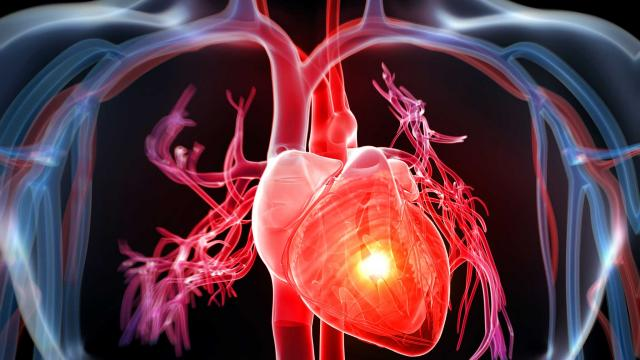

تعارفگھبراہٹ ایک عام انسانی احساس ہے۔ ہم سب کو اس کا تجربہ اس وقت ہوتا ہے جب ہم کسی مشکل یا کڑے وقت سے گذرتے ہیں۔ خطرات سے بچاؤ، چوکنا ہونے اور مسائل کا سامنا کرنے میںعام طور پر خوف اور گھبراہٹ مفید ثابت ہوسکتے ہیں۔ تاہم اگر یہ احساسات شدید ہوجائیں یا بہت ع رصے تک رہیں تو یہ ہمیں ان کاموں سے روک سکتے ہیں جو ہم کرنا چاہتے ہیں اور اس کے نتیجے میں ہماری زندگی تکلیف دہ ہوسکتی ہے۔ فوبیا کسی ایسی مخصوص صورتحال یا چیز کا خوف ہے جو خطرن اک نہیں ہوتی اور عام طور پر لوگوں کے لیے پریشان کن نہیں ہوتی۔
گھبراہٹ کی علامات
ذہنی علامات جسمانی علامات ہر وقت پریشانی کا احساس تھکن کا احساس توجہ مرکوز نہ کرپانا چڑچڑے پن کا احساس نیند کے مسائل دل کی دھڑکن محسوس ہونا زیادہ پسینہ آنا پٹھوں میں کھنچاؤ اور درد ہونا سانس کا تیزی سے چلنا سر چکرانا بے ہوش ہو جانے کا ڈر ہونا بدہضمی اسہال گھبراہٹ کا شکار افراد ان علامات کی وجہ سے یہ سمجھتے ہیں کہ انہیں کوئی شدید جسمانی بیماری ہو گئ ہے، گھبراہٹ سےان علامات میں اور زیادہ اضافہ ہو جاتا ہے۔ گھبراہٹ کے غیر متوقع اچانک دورے پینک (Panic) کہلات ے ہیں ۔ اکثر گھبراہٹ اور پینک کے ساتھ ڈپریشن بھی ہوتا ہے۔ جب ہم اداس ہوتے ہیں تو ہماری بھوک ختم ہوجاتی ہے اور مستقبل تاریک اور مایوس کن نظر آتا ہے